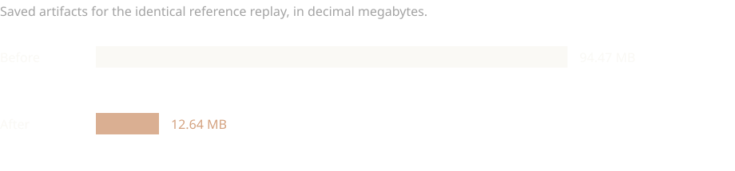

An engineering result
We made the saved results much smaller.
While investigating those limits, we also removed work that the reference run did not need.

By skipping unused candidate construction, we reduced saved artifacts by 86.6%.
We kept the same samples and diagnostics, so the smaller files are easier to store and inspect.